¿Qué curso vas a hacer hoy?
Unidad 1 · La Prehistoria
Cuaderno de repaso por épocas, con humor y casos reales de la historia.
Las respuestas se escriben en un cuaderno aparte. Puedes cambiar de curso cuando quieras desde el menú (☰).
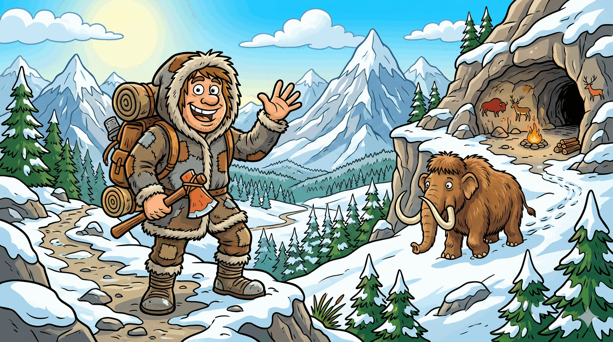
Cuaderno de repaso de
La Prehistoria
"El asesinato más antiguo del mundo (que tardó 5.300 años en resolverse)"
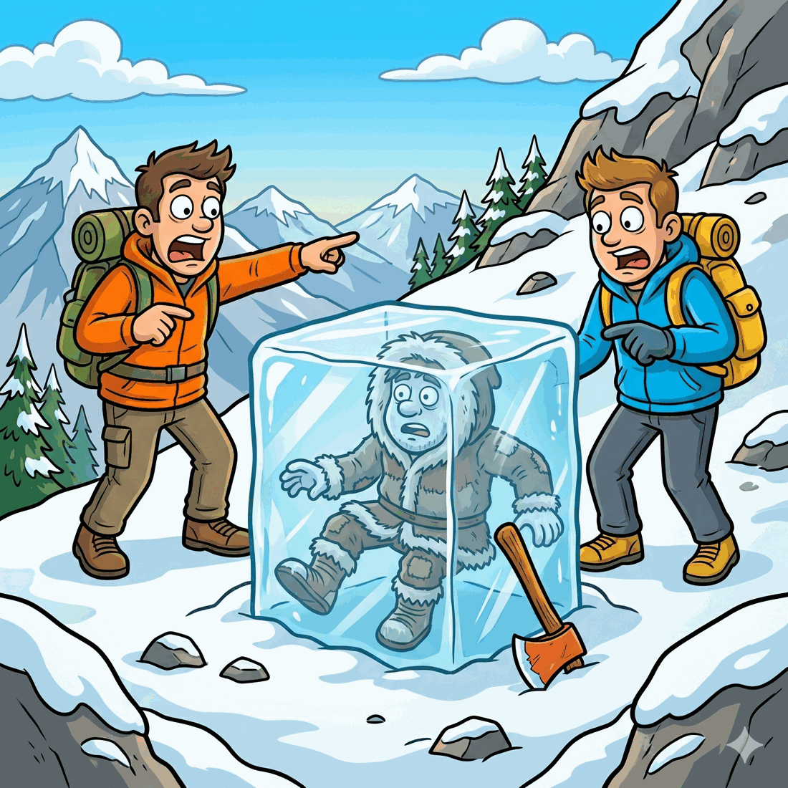
En septiembre de 1991, dos excursionistas paseaban por los Alpes cuando se llevaron el susto de su vida. Asomando del hielo había… ¡un hombre! Al principio pensaron que era un montañero despistado y un poco congelado. Pero no: aquel señor llevaba muerto unos 5.300 años. Lo bautizaron Ötzi, y resultó ser una auténtica momia de la Prehistoria, conservada en el hielo como un polo de fresa olvidado en el congelador.
Todo el mundo pensó que Ötzi había muerto de frío. Pero décadas después, los científicos le hicieron una radiografía y descubrieron algo escalofriante: tenía una punta de flecha clavada en el hombro. ¡Alguien le había disparado con un arco por la espalda! Así que Ötzi no se perdió en la montaña: lo asesinaron. Y nadie sabe quién fue.
Lo más alucinante es lo que llevaba encima. Este cazador viajaba mejor equipado que muchos excursionistas de hoy: un hacha de cobre (carísima en su época, señal de que era alguien importante), un cuchillo de piedra, ropa de piel cosida y hasta una mochila con marco de madera.
¿Y sabes qué más tenía? Tatuajes. Sesenta y uno, para ser exactos. Pero no eran dibujos chulos de dragones: eran rayitas y cruces colocadas justo donde le dolían las articulaciones. Los expertos creen que eran una especie de "medicina" para el dolor. Vamos, que Ötzi se tatuaba… ¡para que no le doliera la espalda!
Por si fuera poco, analizaron lo que había comido antes de morir: carne de cabra montés y unos cereales. También descubrieron que tenía la barriga llena de parásitos, los dientes hechos un desastre y que era intolerante a la leche. Pobre Ötzi: lo perseguían, le dolía todo y encima no podía merendar un vaso de leche.
Gracias a él sabemos un montón sobre cómo vivían las personas hace miles de años. No está mal para alguien que pasó 5.300 años metido en un cubito de hielo gigante.
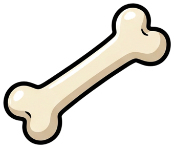
Estas palabras llevan H muda: la H no se oye, ¡pero está ahí! Las imágenes te ayudan a recordarla.
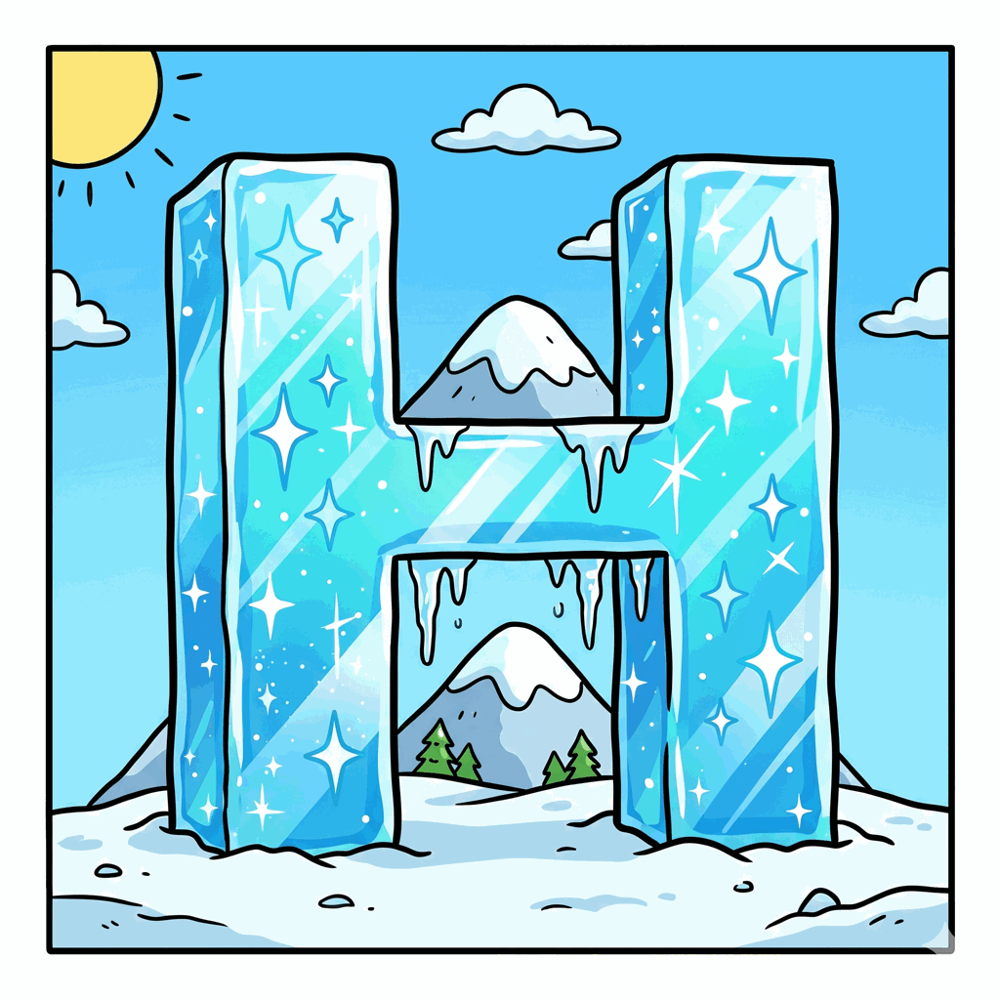
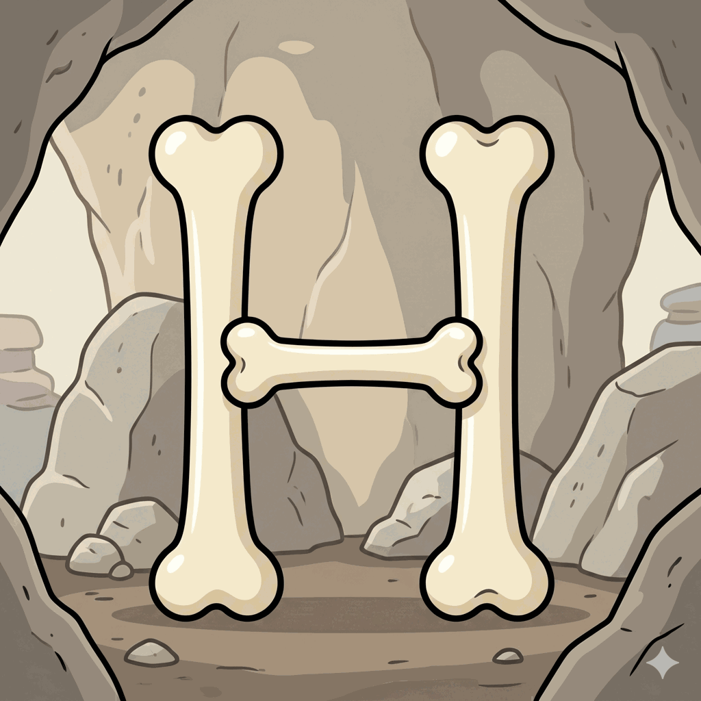
Mira los dos dibujos. Copia hielo y hueso dos veces cada una y colorea la H.
✏️ → en tu cuadernoRecuerda: la H no suena, ¡pero siempre va delante!
Ejemplo: ca__allo → ca b allo
Mira HIELO y HUESO y rodea la H en cada palabra.
La H no suena, pero va delante. ¡No te olvides de ella!
Ejemplo: "un acha" → "un hacha"
⚠️ Ojo: ¡una de las frases puede estar ya bien escrita! No la cambies.
Clasifica en agudas, llanas y esdrújulas. (Ejemplo: ár-bol → llana)
momia · cazador · radiografía · médico · prehistoria · cobre
✏️ → haz la tabla en tu cuadernoSopa de letras · busca: MOMIA · FLECHA · ARCO · HIELO · COBRE · CAZADOR
Están en horizontal, vertical y diagonal.
Y un crucigrama — adivina cada palabra por su pista:
Los buenos detectives investigan. Tú también vas a buscar pistas… ¡en internet!
Tu habilidad de hoy: las palabras clave. Cuando buscas algo en internet, no escribes una frase larga. Escribes solo las palabras importantes.
❌ Mal: "quién era el hombre que encontraron congelado en una montaña hace mucho tiempo"
✅ Bien: Ötzi o Ötzi hombre de hielo
Tu reto: entra en Wikipedia con un adulto y busca Ötzi. Lee solo la introducción y encuentra UN dato nuevo que no esté en el texto.
💡 Pista: mira dónde vivía, qué edad tenía o cómo se llama el lugar donde lo encontraron.
Tu reto: busca Ötzi en Wikipedia y encuentra dos datos nuevos. Luego comprueba uno en otro sitio distinto. ¿Dice lo mismo?
💡 Un buen investigador siempre comprueba lo que encuentra en más de un sitio.
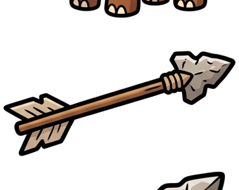
El caso: eres un detective del tiempo. Han pasado 5.300 años y te toca resolver el misterio: ¿qué le pasó a Ötzi?
Escribe tu informe. Responde mientras escribes:
Intenta usar: flecha, cazador, hielo.
✏️ → escribe el informe en tu cuadernoTu informe completo debe tener:
Usa conectores (primero, después, además, por eso, finalmente) y al menos 4: momia, flecha, cobre, cazador, hombro.
✏️ → escribe el informe en tu cuaderno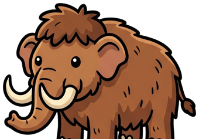
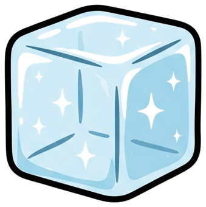
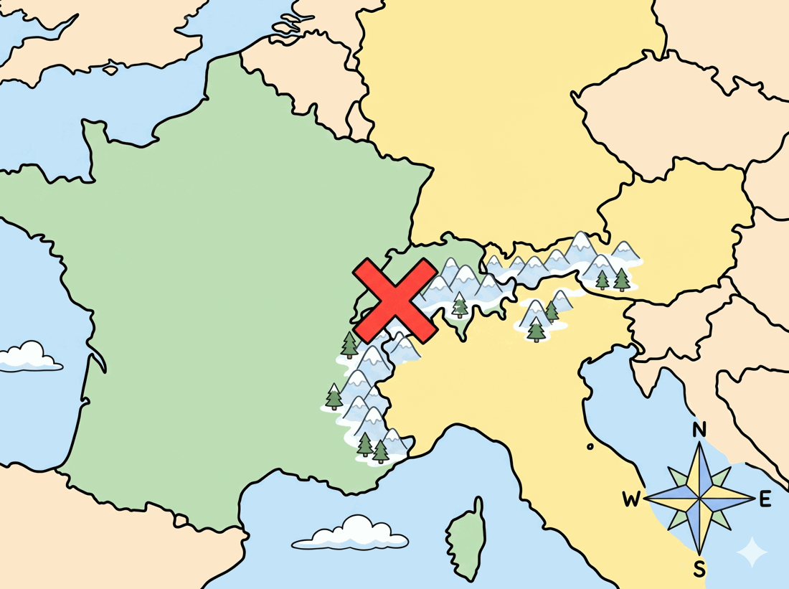
Cuando algo se muere, normalmente se pudre. Pero el frío lo para todo. Por eso Ötzi se conservó: ¡5.300 años como en un congelador gigante!
Un cuerpo se pudre porque unas seres vivos diminutos, las bacterias, lo descomponen. Pero necesitan calor: con el frío extremo se "duermen" y no actúan.
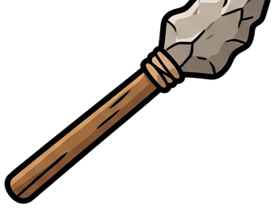
El gancho es el hacha de cobre de Ötzi: tan cara que demuestra que era importante. ¿Cómo se compraba algo así sin dinero?
En la prehistoria no había dinero. Si querías algo, lo cambiabas por otra cosa. Eso es el trueque.
Ejemplo: Ötzi consiguió su hacha cambiándola por pieles, comida o trabajo.
💡 Por ese problema se inventó el dinero: algo que todos aceptan a cambio de cualquier cosa.
El precio sube y baja según cuántas hay y cuánta gente las quiere: poco + muy buscado → sube; mucho + poco buscado → baja. El cobre era carísimo porque había poco y mucha gente lo quería.
They all have a silent 'e' at the end: i-ce, ca-ve.
ice · axe · cave · stone · bone · fire
👉 Read them. Then your adult reads them out loud and you write them on a separate sheet. No peeking!
Ötzi was a hunter. He lived in the mountains more than 5,000 years ago. One day he died on a high, cold mountain. The ice kept his body frozen for a very long time.
a) What was Ötzi's job?
b) Why did his body stay frozen for so long?
✏️ → answer in your notebookUse: hunter, ice, mountain, copper. Start: "Ötzi was a hunter. He had a bow and arrows. He lived…"
✏️ → in your notebook| Word | The trick |
|---|---|
| knife | the K is silent |
| ancient | "sh" sound written ci |
| glacier | "sh" sound written ci again |
| shoulder | written ou (sounds like "oh") |
| mountain | ends in -tain (sounds like "-ten") |
| weapon | ea sounds like a short "e" |
| mummy | final y sounds like "i"; double m |
| copper | short vowel → double pp |
👉 Learn the rules. Then your adult reads them out loud and you write them on a separate sheet.
Ötzi is the oldest natural mummy in Europe. Two hikers discovered him in 1991 in the Alps. A glacier had preserved his body for more than 5,000 years. Scientists found an arrow wound in his shoulder, so they think someone killed him. Thanks to Ötzi, we know a lot about life in the Stone Age.
a) When was Ötzi discovered, and by whom?
b) What preserved his body for thousands of years?
c) Scientists found an arrow wound. What does this tell us about how Ötzi probably died? (think!)
✏️ → answer in your notebookYou are a scientist studying Ötzi. Use connectors (first, then, also, finally) and at least 4: glacier, frozen, copper, arrow, mummy. Start: "Today I studied Ötzi, the famous ice mummy. First, I looked at his body…"
✏️ → in your notebook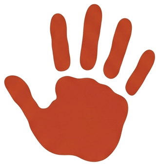
Zona extra — opcional, ¡sin nota! Tres actividades para los que se quedan con ganas de más.
Necesitas: un vaso de plástico, agua, un congelador y un muñequito que se pueda mojar.
Piensa: ¿por qué con sal el hielo se derrite antes? ¿Qué pasó con el Ötzi de verdad cuando el hielo se derritió en 1991?
Tres cazadores —Ug, Mog y Tok— tienen un hacha, un arco y una lanza. Con las pistas, averigua de quién es cada una:
✏️ Ug tiene · Mog tiene · Tok tiene
Pista: empieza por Tok.
Dibuja tu propia pintura rupestre que cuente una cacería: el animal, los cazadores, las armas… ¡pero solo con dibujos, sin palabras! (como hacían ellos).
✏️ → dibújala en tu cuaderno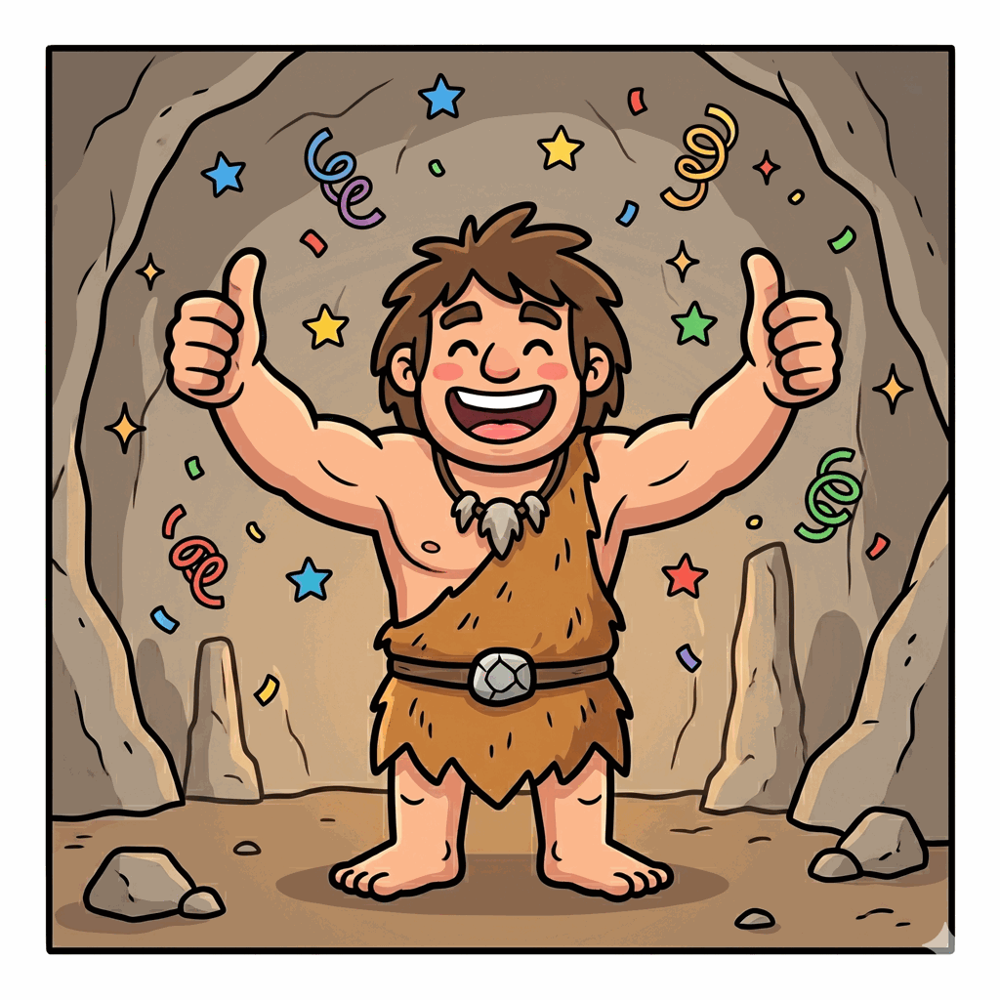
¡Bien hecho!
Has resuelto el caso más antiguo de la historia. Nos vemos en la Unidad 2.